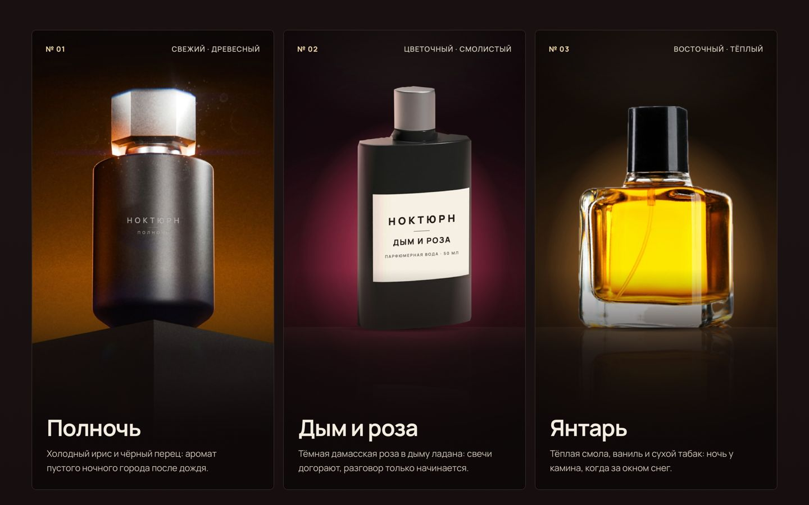

Продукт как герой
Тёплый тёмный фон вместо угрюмого чёрного, каждый флакон в своём свете, плотный шрифт Manrope и много воздуха.
- карточка аромата: характер, пять нот, объём и цена;
- под коллекцией набор пробников за 1 200 ₽, его стоимость вычитается из покупки флакона;
- цены подписаны как демонстрационные.